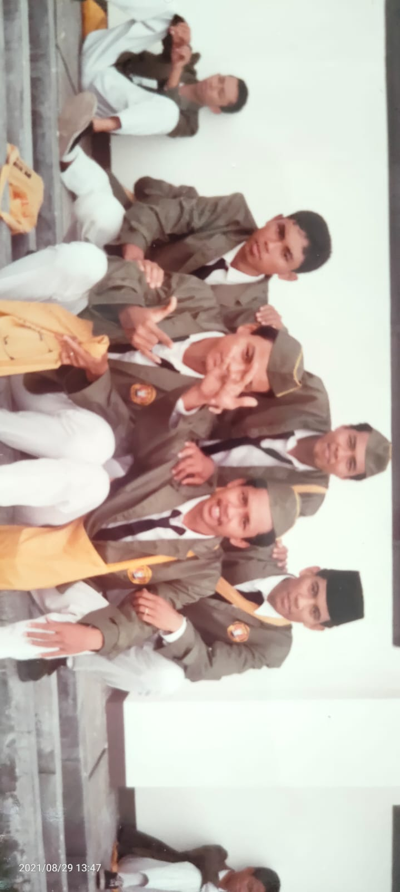
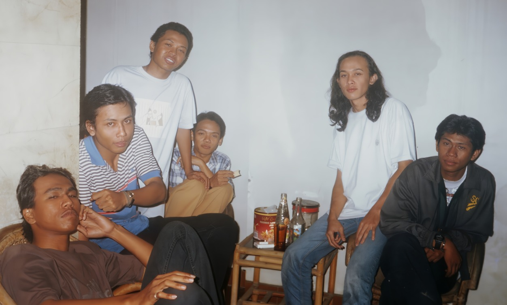

Tahun 1992
Awal Mula Langkah
"Di sinilah semua dimulai, di area orientasi kampus di tahun 1992, masih muda, penuh harapan, dan tentu saja, penuh tawa."
Masa-masa akhir kuliah
Selalu ada waktu untuk kumpul kumpul
"Bukan hanya soal ilmu pertambangan, tapi soal bagaimana berbagi dan meracik indomie di tengah malam, sambil tertawa tentang bagaimana strategi menghadapi ujian yang akan datang.
